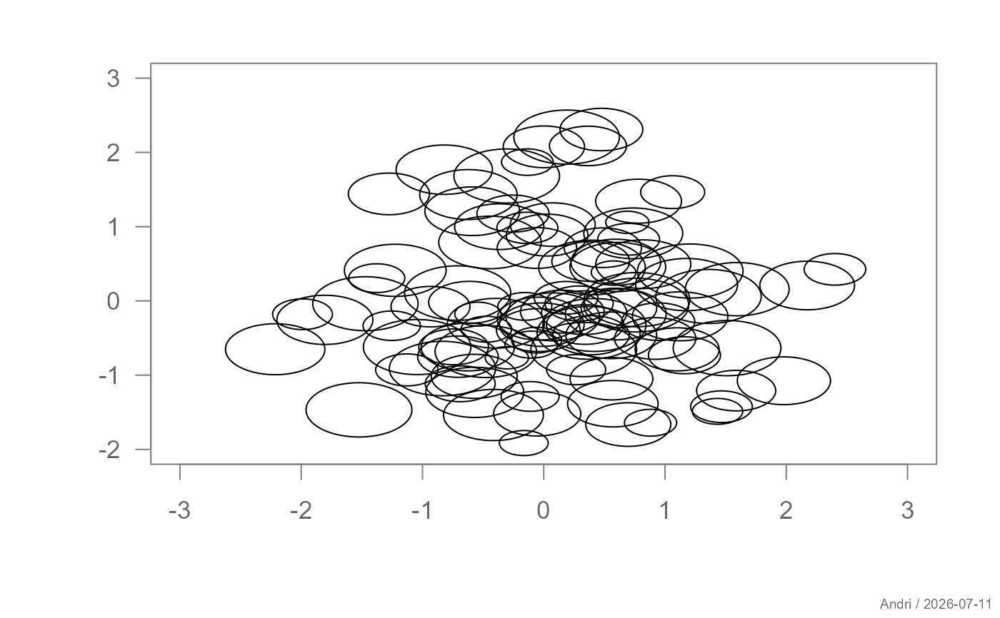
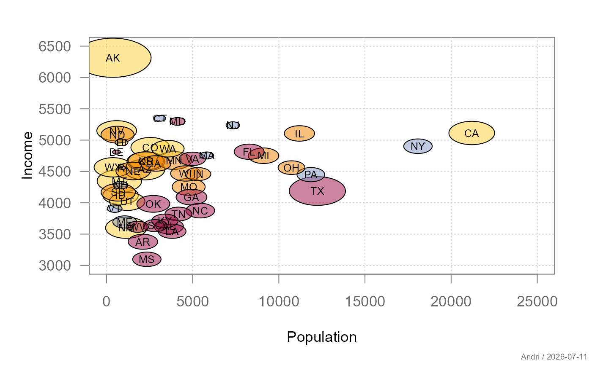

Draws a bubble plot where the position is given by x and y,
and the size of each bubble is proportional to area.
Usage
# Default S3 method
plotBubble(
x,
y,
area,
...,
add = FALSE,
col = NA,
border = NULL,
cex = 1,
grid = NA,
xlim = NULL,
ylim = NULL,
na.rm = FALSE,
main = "",
xlab = "",
ylab = ""
)
# S3 method for class 'formula'
plotBubble(
formula,
data = NULL,
subset,
na.action = na.omit,
...,
add = FALSE,
col = NA,
border = NULL,
cex = 1,
grid = NA,
xlim = NULL,
ylim = NULL,
main = "",
xlab = "",
ylab = ""
)Arguments
- x
Numeric vector of x positions.
- y
Numeric vector of y positions.
- area
Numeric vector controlling bubble sizes (interpreted as area).
- ...
Additional graphical parameters passed to
par().- add
Logical; if
TRUE, adds to an existing plot.- col
Fill color(s) of the bubbles.
- border
Border color(s) of the bubbles.
- cex
Scaling factor applied to bubble areas.
- grid
Logical,
NA, or list controlling background grid.- xlim, ylim
Axis limits.
- na.rm
Logical; remove missing values.
- main, xlab, ylab
Plot labels.
- formula
A formula of the form
y ~ x | area.- data
Optional data frame.
- subset
Optional subset expression.
- na.action
Function to handle missing values.
Details
The function supports both a default interface and a formula interface
of the form y ~ x | area.
Bubble sizes are interpreted as areas and internally converted to radii via \(r = \sqrt{area / \pi}\). Aspect ratio is corrected to ensure visually accurate circles.
Graphical elements such as grids are controlled via the unified plot
design system using bedrock::callIf() and .theme().
See also
Other topic.graphics:
plotDens(),
plotDens2D(),
plotRidge()
Examples
set.seed(1)
x <- rnorm(100)
y <- rnorm(100)
a <- runif(100, 1, 10)
plotBubble(x, y, a)

df <- data.frame(x = x, y = y, a = a)
plotBubble(y ~ x | a, data = df)
US <- data.frame(state.x77, State=state.name,
Region=state.region, Abb=state.abb)
plotBubble(Income ~ Population | Area ,
data=US,
grid=TRUE, col=addAlpha(pal("Helsana")[US$Region]), cex=1.2 )
text(Income ~ Population, US, labels=US$Abb, cex=0.8)
